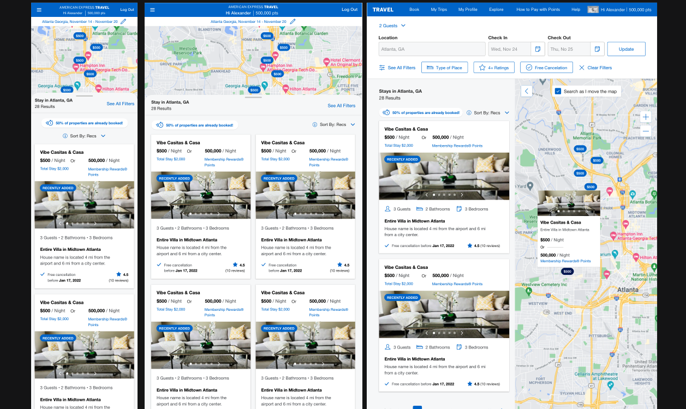
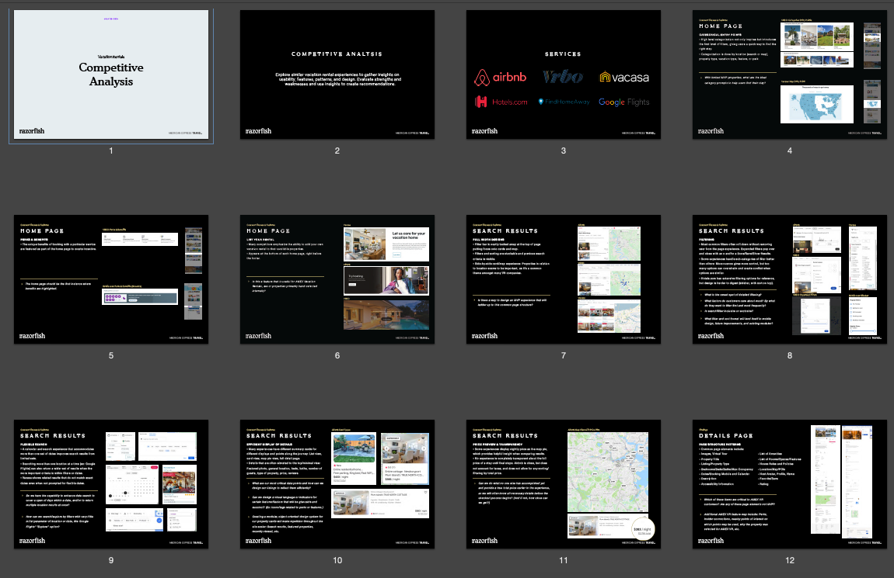
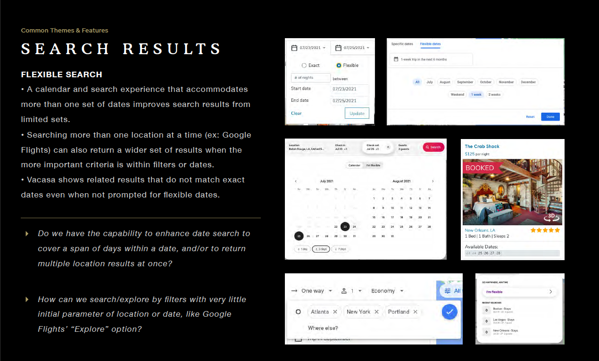
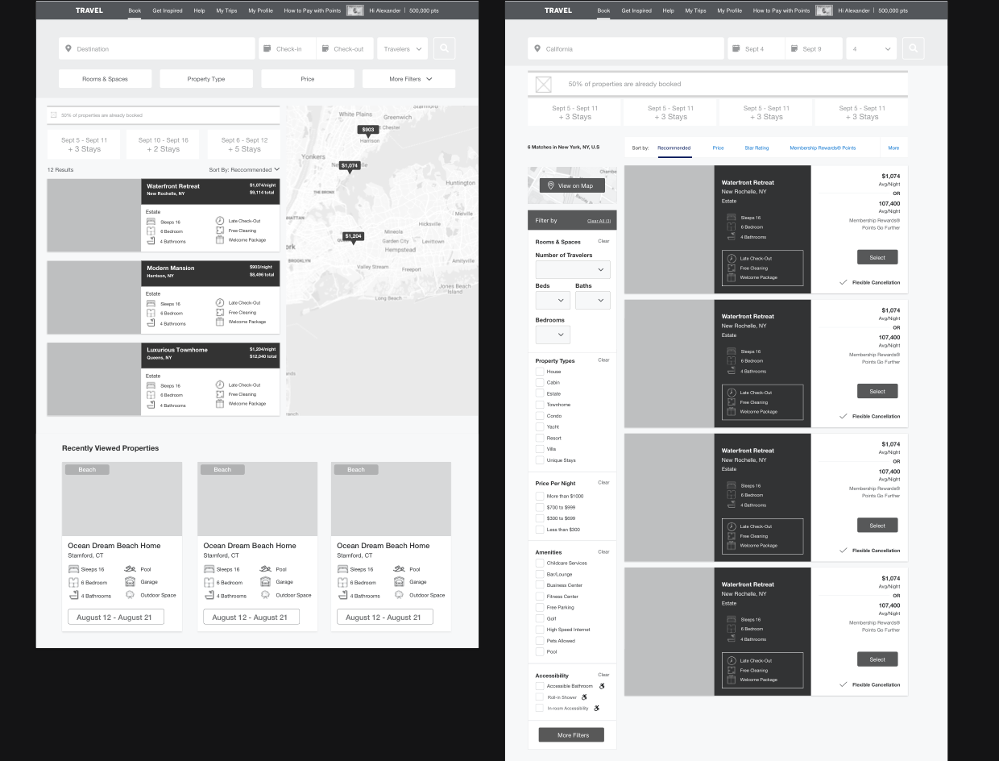
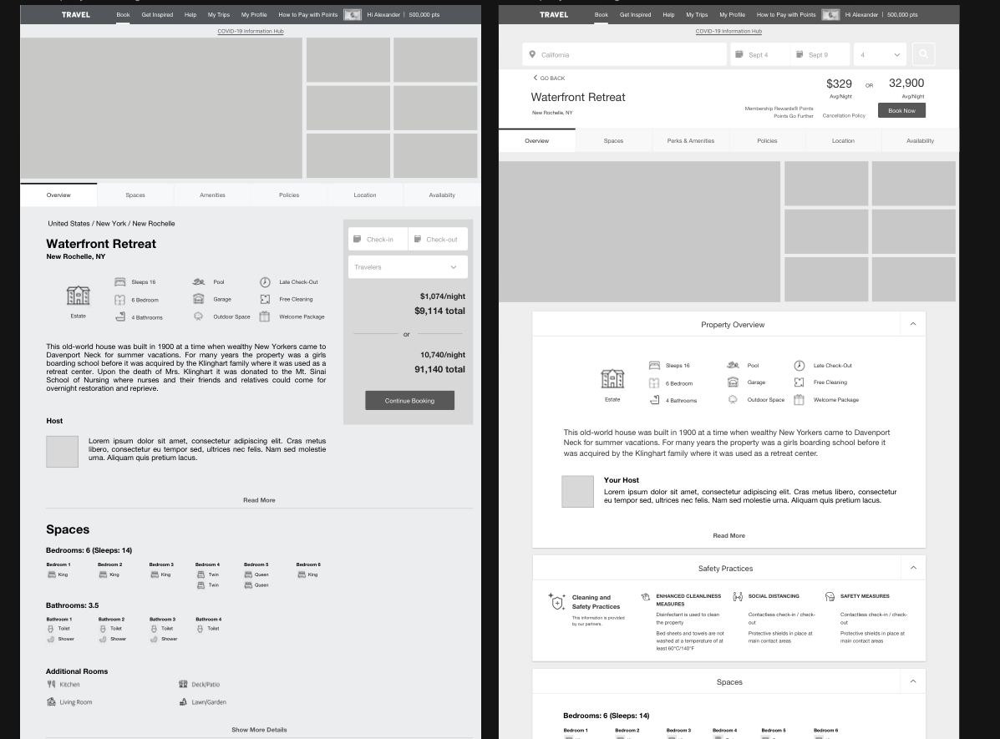
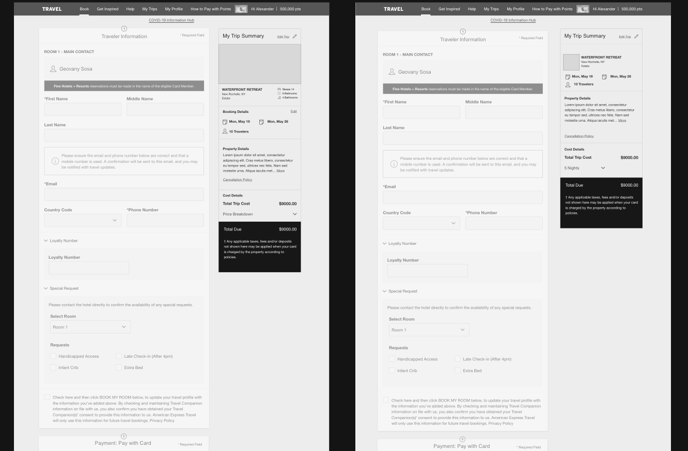

01 / Case Study — Ecommerce & Travel
Amex Travel
Bringing vacation rentals to American Express Travel — a new booking experience woven cleanly into a points platform 54 million cardmembers already trust.
01 — Overview
American Express Travel is a points-based booking service for cardmembers. My team was tasked with adding something new to it: vacation rentals — luxury properties booked with points.
The catch was that this had to slot into an existing platform with its own architecture, design language, and backend — for an audience of 54 million people with high expectations of the Amex brand. New capability, zero seams.

02 — The Challenge
A new inventory type in a system that wasn’t built for it
Rentals aren’t hotels. They carry different data, different trust signals, and a longer, more considered decision. Introducing them to Amex Travel meant designing a full rental flow — search, browse, detail, checkout, confirmation — that felt native to a platform never designed with rentals in mind, without ever compromising the brand’s premium feel.
03 — Approach
Research first, then design to fit
I let evidence — not assumptions — drive the design, then made the new experience feel inevitable inside the existing one.
- 1Studied the market. Competitive analysis across vacation rentals plus a heuristic evaluation of existing platforms surfaced common themes, pain points, and best practices.
- 2Turned findings into a plan. Synthesized the research into actionable recommendations and prioritized features against them.
- 3Designed and prototyped. Multiple rounds of wireframes and graphic compositions, built into click-through prototypes for stakeholder presentations.
- 4Iterated with Amex directly. Refined on client feedback and delivered object-oriented, responsive designs in close collaboration with the internal team.


04 — The Solution
A rental booking flow that feels like it was always there
The result was a complete, developer-ready design package that integrated luxury rental properties into Amex Travel’s existing platform — object-oriented and responsive, so it holds up across screens and scales with the catalog. Cardmembers get a rental experience that looks and behaves like the Amex Travel they already know.



05 — Impact
Rentals, delivered to a 54-million-strong audience
A brand-new inventory type, designed end-to-end and handed off ready to build — integrated so cleanly it reads as a native part of the platform.
54M
U.S. cardmembers reachable
5
Flow stages designed — search → confirm
3
Responsive breakpoints — mobile, tablet, desktop
06 — Reflection
Designing a high-trust purchase taught me that speed and reassurance aren’t opposites — people finish a booking when they feel understood at every step. The discipline of making something brand-new feel inevitable, like it had always belonged in the product, is exactly the kind of challenge I look for.